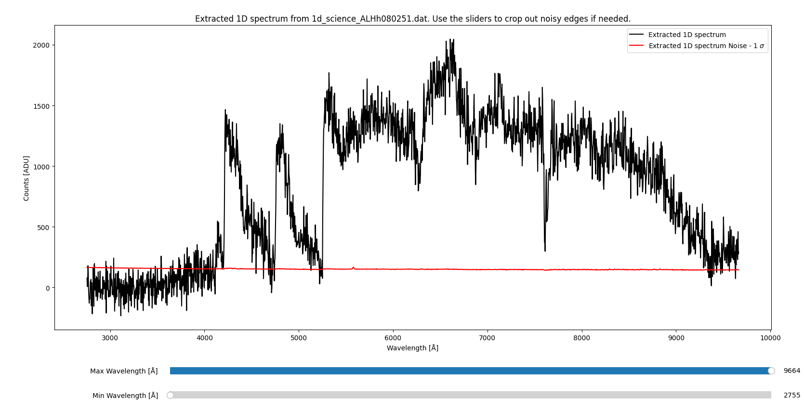
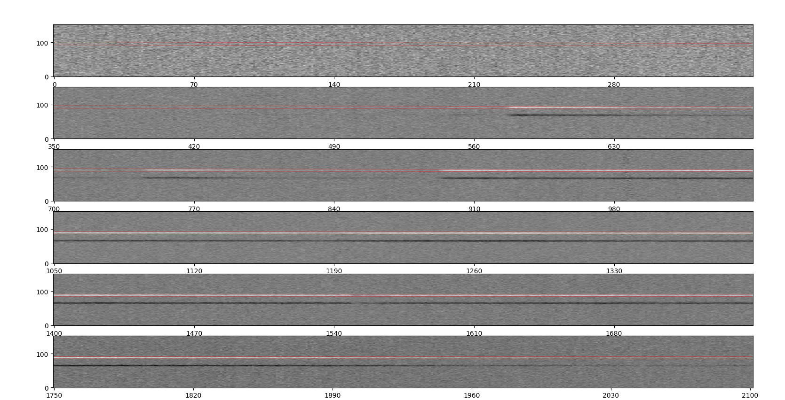
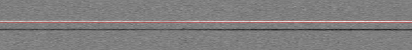

Extracting 1D spectrum¶
This procedure extracts the 1D spectrum from the 2D spectrum (counts vs. spectral pixel).
There are 2 ways in the software to extract the 1D spectrum:
Optimal extraction: This is the default method.
Summing the counts: This is done by summing the counts along the spatial axis.
Both of these are described below. For details on error estimation, please see the note on uncertainties.
Optimal extraction¶
The routine is called by the command:
pylongslit_extract_1d PATH_TO_CONFIG_FILE
The routine will extract the 1D spectrum from the 2D spectrum using the optimal extraction method described in Horne (1986).
The optimal extraction algorithm uses the profiles fitted from the object tracing routine to estimate the profile of the object in the spatial direction. The algorithm then weights the counts in the 2D spectrum according to the profile and sums the counts to get the 1D spectrum:
Where:
\(S(p_{\lambda})\) is the extracted 1D spectrum as a function of spectral pixel \(p_{\lambda}\).
\(P_i(p_{\lambda})\) is the spatial profile of the object at spatial pixel \(i\) for spectral pixel \(p_{\lambda}\).
\(D_i(p_{\lambda})\) is the observed data (counts) at spatial pixel \(i\) for spectral pixel \(p_{\lambda}\).
\(\sigma_i(p_{\lambda})\) is the uncertainty (noise) at spatial pixel \(i\) for spectral pixel \(p_{\lambda}\).
The spectrum is then wavelength calibrated using the wavelength solution obtained from the wavelength calibration routine.
Upon exiting, the routine will display the extracted 1D spectrum (taken from the SDSS_J213510+2728 example dataset):
{kind=link}
You can use the sliders to crop out any noise at the edges for better visualization.
The extracted 1D spectrum is saved in the output directory specified in the configuration file,
with the filename "1d_science_FILENAME.dat" or "1d_standard_FILENAME.dat".
The files have three columns: wavelength, counts, and variance.
Summing the counts¶
This extraction method is more simple than the optimal extraction method. Generally, you will get the more precise results with less noise using the optimal extraction method. This method is however useful for edge cases where the object profile needs to be tightly constrained.
The routine is called by the command:
pylongslit_extract_simple_1d PATH_TO_CONFIG_FILE
This procedure counts the number of counts in the region defined by the object center +/- the FWHM of the object.
Firstly, a QA is shown to display this region (from the SDSS_J213510+2728 example dataset):
{kind=link}
Zoomed in:
{kind=link}
If the region is not correct, you should revise the object tracing routine.
Then, the software will use "photutils.aperture.RectangularAperture" to sum the counts in the region.
You can read the docs for the method at photutils.
The spectra are then plotted and saved the same way as in the optimal extraction routine.